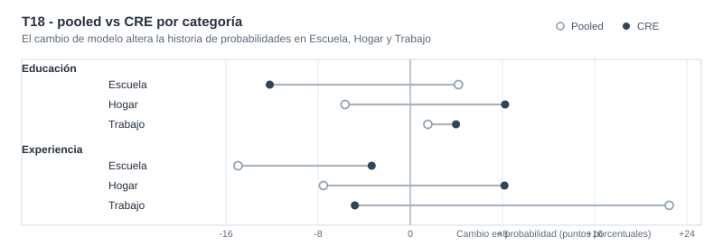

Estados de actividad en panel: qué cambia entre multinomial pooled y CRE
Lectura aplicada sobre heterogeneidad persistente no observada en escuela, hogar y trabajo
En un panel laboral corto, ¿cómo cambia la interpretación de escuela, hogar y trabajo cuando se pasa de multinomial pooled a multinomial-CRE?
La pieza compara pooled vs CRE (Mundlak) para ordenar mejor la lectura aplicada y la elección de especificación: el foco está en probabilidades comparables (APEs), no en coeficientes latentes.
Modelo operativo
Multinomial-CRE con cluster(id)
Comparado contra multinomial pooled para auditar la sensibilidad de la lectura aplicada
Contexto aplicado
Estados de actividad en panel laboral
N=12,665, 1,881 personas, 1981-1987, panel no balanceado
Hallazgo central
APEs cambian de forma material
La lectura pooled mezcla diferencias persistentes entre personas con variación temporal
Respaldo formal
Mundlak conjunto significativo
chi2(6)=1636.61, p=0.0000 para medias temporales
Resumen
Esta pieza estudia un resultado multinomial de actividad (status: escuela, hogar, trabajo) en un panel laboral corto. La pregunta aplicada no es metodológica en abstracto: es si la lectura de probabilidades cambia de forma relevante cuando se reconoce heterogeneidad persistente no observada.
La comparación entre multinomial pooled y multinomial-CRE (Mundlak) muestra diferencias importantes en APEs por categoría. Por eso, el aporte del caso se concentra en criterio de especificación e interpretación profesional de probabilidades, sin exagerar el alcance metodológico.
Pregunta
En este panel laboral, ¿la asociación entre educación, experiencia y estado de actividad cambia de forma relevante al pasar de multinomial pooled a multinomial-CRE?
Resultado: status con tres categorías de actividad: Escuela, Hogar y Trabajo. Variables clave: educ, exper, expersq, black, dummies anuales, y medias temporales en CRE.
Idea central
El valor de la pieza no está en “predecir más” ni en complejizar por complejizar. Está en mostrar cómo cambia la lectura aplicada cuando se controla heterogeneidad persistente correlacionada con regresores en un multinomial de panel.
Portfolio econométrico
Por qué este problema importa
En decisiones de actividad individual, escuela, hogar y trabajo son alternativas mutuamente excluyentes. Una lectura pooled puede ser útil como punto de partida, pero puede mezclar diferencias estructurales entre personas con cambios dentro de persona a lo largo del tiempo.
Para una lectura profesional, importa saber si ese cruce altera la interpretación de probabilidades. Si la altera, la decisión de especificación deja de ser un detalle técnico y pasa a ser parte del mensaje aplicado.
Datos y variables
Se usa keane.dta en formato panel.
- Unidad de observación: persona-año (
id,year) - Período:
1981-1987 - Muestra operativa:
N=12,665,1,881personas, panel no balanceado - Resultado:
statuscon tres categorías de actividad: Escuela, Hogar y Trabajo - Regresores clave:
educ,exper,expersq,i.black,y82-y87 - En CRE (Mundlak):
educ_bar,exper_bar,expersq_bar - Nota de muestra: la base original contiene
12,723observaciones; la estimación operativa usa12,665constatusobservado
Estrategia empírica
La secuencia se diseña para mantener foco aplicado:
- Estimar multinomial pooled con errores
cluster(id)como referencia inicial. - Estimar multinomial-CRE agregando medias temporales por individuo.
- Comparar APEs por categoría entre pooled y CRE, priorizando magnitudes interpretables.
- Usar test conjunto de medias temporales tipo Mundlak como respaldo sobre relevancia de heterogeneidad correlacionada.
- Dejar indicadores de clasificación in-sample en segundo plano, como chequeo descriptivo no predictivo.
Qué evita una lectura automática
Para mantener una lectura profesional, conviene separar planos:
- Plano sustantivo: cómo se redistribuyen probabilidades entre escuela, hogar y trabajo.
- Plano de especificación: cuánto cambia esa lectura cuando se incorpora heterogeneidad persistente.
- Plano de diagnóstico: si las medias temporales tipo Mundlak respaldan que esa heterogeneidad correlacionada es relevante.
Esa separación evita convertir un resultado técnico aislado en una conclusión general del caso.
Resultados principales
La comparación pooled vs CRE cambia la lectura aplicada en puntos importantes:
- Educación (
educ): en pooled aumenta la probabilidad de escuela (+0.0418) y reduce hogar (-0.0570); en CRE esa lectura se revierte para escuela (-0.1220) y hogar (+0.0823), con aumento de trabajo (+0.0397). - Experiencia (
exper): en pooled empuja con fuerza hacia trabajo (+0.2249), pero en CRE aparece reducción en trabajo (-0.0482) y aumento en hogar (+0.0817), con cambio de magnitud en escuela. - Perfil demográfico (
black): mantiene un patrón de mayor probabilidad relativa de hogar y menor de escuela/trabajo, pero con menor magnitud en CRE.
Síntesis comparativa de magnitudes (APE)
| Variable | Escuela pooled | Escuela CRE | Hogar pooled | Hogar CRE | Trabajo pooled | Trabajo CRE | Lectura aplicada |
|---|---|---|---|---|---|---|---|
educ |
+0.0418 (0.0017) | -0.1220 (0.0055) | -0.0570 (0.0020) | +0.0823 (0.0076) | +0.0152 (0.0020) | +0.0397 (0.0090) | Cambia signo en escuela y hogar al incorporar heterogeneidad persistente |
exper |
-0.1493 (0.0062) | -0.0335 (0.0069) | -0.0756 (0.0060) | +0.0817 (0.0095) | +0.2249 (0.0050) | -0.0482 (0.0101) | La lectura pooled sobre trabajo no se sostiene en CRE |
El comparador visual siguiente resume, por outcome, cuánto se mueve la lectura aplicada al pasar de pooled a CRE para educación y experiencia.

Estas diferencias no implican una lectura concluyente, pero sí muestran sensibilidad sustantiva de interpretación cuando se corrige la especificación para heterogeneidad persistente.
expersq y black se mantienen como evidencia complementaria en el respaldo técnico, sin desplazar las variables protagonistas.
Diagnósticos de respaldo
El respaldo formal y técnico se mantiene acotado y funcional a la narrativa aplicada:
- Test Mundlak conjunto:
chi2(6)=1636.61,p=0.0000paraeduc_bar,exper_bar,expersq_bar. - Implicancia: la heterogeneidad persistente correlacionada es empíricamente relevante en este caso.
- Nota secundaria (clasificación): el ajuste in-sample del modelo CRE en
statuses79.55%; se reporta solo como referencia descriptiva y no como criterio de valor principal.
Resumen de diagnósticos
| Diagnóstico | Evidencia | Lectura profesional |
|---|---|---|
| Test conjunto Mundlak | chi2(6)=1636.61, p=0.0000 | La heterogeneidad persistente correlacionada es relevante En esta aplicación |
| Comparación APE pooled vs CRE | Cambios de magnitud y signo en educ y exper | La especificación afecta la interpretación aplicada de probabilidades |
| Clasificación in-sample (secundaria) | 79.55% en status | Se informa como referencia descriptiva, no como meta predictiva |
Lectura profesional
T18 aporta una práctica profesional concreta: antes de cerrar una historia sustantiva en multinomial de panel, conviene auditar cuánto depende esa historia del supuesto pooled sobre heterogeneidad no observada.
En este caso, la comparación pooled vs CRE cambia varias magnitudes y algunos signos en APEs. Por eso, para esta muestra, la lectura principal se ancla en CRE; no por superioridad abstracta del método, sino por consistencia entre pregunta aplicada, estructura de panel y evidencia de Mundlak.
Cierre
La pieza muestra cómo una decisión de especificación puede cambiar la interpretación aplicada de estados de actividad en panel. Ese es el valor del caso: econometría al servicio de una lectura más creíble y transparente, con foco en probabilidades comparables y con límites explicitados.